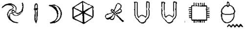
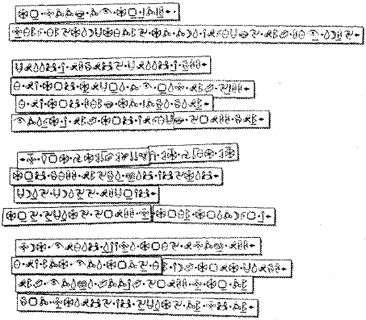

ARTIK Artemis Fowl’un amacına ulaşmak için ne denli ileri gidebileceğini tahmin etmiş olmalısınız. Peki ama amacı neydi? Alkol bağımlısı bir sprita şantaj yapmayı gerektirecek bu garip plan ne olabilirdi? Cevabı altındı.
ARTIK Artemis Fowl’un amacına ulaşmak için ne denli ileri gidebileceğini tahmin etmiş olmalısınız. Peki ama amacı neydi? Alkol bağımlısı bir sprita şantaj yapmayı gerektirecek bu garip plan ne olabilirdi? Cevabı altındı.

ARTIK Artemis Fowl’un amacına ulaşmak için ne denli ileri gidebileceğini tahmin etmiş olmalısınız. Peki ama amacı neydi? Alkol bağımlısı bir sprita şantaj yapmayı gerektirecek bu garip plan ne olabilirdi? Cevabı altındı.
Artemis’in araştırması, iki yıl önce, internete merak salmasıyla başlamıştı. Kısa süre içinde en acayip siteleri bulmuştu: Uzaylılar tarafından kaçırılanlar, UFO’ları görenler ve doğaüstü olaylarla ilgili olanlar. Özellikle de Peri Halkının varlığıyla ilgili olanı.
Cigabaytlarca veriyi tarayarak, dünyanın hemen hemen her ülkesinde perilerle ilgili yüzlerce bilgiye ulaştı. Her uygarlığın, Peri Halkıyla ilgili, kendilerine özgü terimleri vardı ama hiç kuşkusuz hepsi de aynı gizli ailenin fertleriydiler. Birçok öyküde, her perinin sahip olduğu bir Kitaptan söz ediliyordu. Soylarının tarihini ve uzun yaşam sırlarını içerdiği iddia edilen bu kitap onların Kutsal Kitabıydı. Elbette ki bu Kitap, perilerin metni sayılan, Gnome dilinde yazılmıştı ve hiç bir insanın işine yaramazdı.
Artemis günümüz teknolojisiyle bu Kitab’ın dilimize çevrilebileceğine inanıyordu. Ve bu çeviri sayesinde yepyeni yaratıkları kullanmaya başlayabilirdiniz.
Düşmanının kim olduğunu bil, bu Artemis’in hayat görüşüydü, bu yüzden kendini Peri Halkı’yla ilgili her türlü bilgiyi toplamaya adamıştı, ta ki özellikleriyle ilgili kapsamlı bir veri tabanı oluşturuncaya kadar. Ama bu yeterli değildi. Bu yüzden Artemis internete bir ilan verdi: İrlandalı işadamı bir peri, sprite, leprechaurı, pixieyle tanışmak için yüklü miktarda Amerikan doları verecektir. Aldığı yanıtlar genellikle sahteydi ama Ho Şi Minh Şehri sonuç vermişti.
Belki de Artemis elde ettiklerinden tam anlamıyla yararlanabilecek tek insandı. Henüz kaybetmediği, büyüye olan çocuklara özgü inancım kendi çıkarı için kullanabilecek, erişkinlere özgü bir kararlılığa sahipti. Perileri büyülü altınlarından ayırabilecek biri varsa, bu, ikinci Artemis Fowl’dan başkası olamazdı.
Sabahın erken saatlerinde Fowl Malikânesine vardılar. Artemis hiç zaman kaybetmeden bilgisayarındaki dosyaya kavuşmak istiyordu ama önce annesini görmeye karar verdi.
Angeline Fowl yatalaktı. Kocasının kayıplara karışmasından beri bu haldeydi. Doktorlar sinirsel gerginlik teşhisi koymuşlardı. Dinlenip uyku ilacı almasından başka tedavisi yoktu. Yaklaşık bir yıldır böyleydi.
Kâhya’nın kız kardeşi Juliet merdivenlerin başında oturuyordu. Bakışları adeta duvarı deliyordu. Parıltılı rimeli bile bakışlarını yumuşatamıyordu. Artemis, Juliet’in bu ifadesini daha önce de görmüştü, pizza siparişini getiren küstah çocuğu pes ettirmeden hemen önce. Pes ettirmek, güreşe özgü bir terimdi diye düşündü Artemis. Bu genç bir kız için alışılmadık bir saplantıydı. Ama ne de olsa, o bir Kâhya idi.
“Bir sorun mu var, Juliet?”
Juliet alelacele doğruldu. “Benim hatam, Artemis. Perdeleri aralık bırakmış olmalıyım. Bayan Fowl uyuyamadı.”
“Hımm,” diye mırıldandı Artemis, meşe ağacından basamakları ağır ağır tırmanırken.
Annesinin durumu onu kaygılandırıyordu. Kadıncağız çok uzun zamandır gün ışığım görmemişti. Öte yandan, bir mucize sonucu iyileşip de yeniden dirilmiş olarak yatak odasından çıkarsa bu, Artemis’in olağanüstü özgürlüğünü kaybetmesi demekti. İşte bunun anlamı, delikanlının, okula geri dönüşü ve ön ayak olduğu suç girişimlerinin sonuydu.
Odanın kemerli kapısına hafifçe vurdu.
“Anneciğim? Uyanık mısın?”
Kapının öbür tarafına bir şey fırlatıldı. Pahalı bir şeyin sesine benziyordu.
“Elbette uyanığım! Bu kör edici ışıkta nasıl uyuyabilirim ki?”
Artemis tehlikeyi göze alarak içeri girdi. Dört ayaklı antika karyola, karanlığın içinde kule uçları gibi görünüyor ve kadife perdelerin arasından içeri incecik, solgun bir ışık giriyordu. Angeline Fowl yatağın içinde iki büklüm oturmuştu, solgun kolları ve bacakları loş ışıkta kor gibi parlıyordu.
“Artemis, tatlım, nerelerdeydin?”
Artemis iç çekti. Annesi onu tanımıştı. Bu iyiye alametti.
“Okul gezisinde, anneciğim. Avusturya’ya kayağa gittik.”
“Ah, kayak,” diye mırıldandı Angeline. “Ne kadar da özledim. Belki baban dönünce.”
Artemis’in üzüntüden boğazı düğümlendi. Bu hiç de onun tarzı değildi.
“Evet. Belki babam döndüğünde.”
“Tatlım, şu kör olası perdeleri kapatır mısın? Işık dayanılmaz derecede.”
“Elbette, anneciğim.”
Artemis yerde duran, alçak giysi sandıklarına çarpmamaya özen göstererek, el yordamıyla ilerledi. En sonunda parmaklarını kadife perdelerin üzerinde kenetledi. Bir an için onları ardına kadar açmayı geçirdi aklından, sonra iç çekip aralığı kapadı.
“Teşekkür ederim, tatlım. Bu arada, bu hizmetçiyi artık gerçekten kovmamız gerek. Hiçbir işe yaramıyor.” Artemis bir şey söylememek için kendini tuttu. Juliet, son üç yıldır Fowl malikanesinin çalışkan ve sadık bir üyesiydi. Annesinin dalgınlığından yararlanmanın zamanı gelmişti.
“Elbette haklısın, anneciğim. Ben de bir süredir bunu yapmayı düşünüyordum. Kâhya’nın bu iş için çok uygun bir kız kardeşi var. Sanırım ondan söz etmiştim, adı Juliet.”
Angeline kaşlarını çattı. “Juliet mi, evet, bu isim tanıdık geliyor. Zaten kim olursa olsun, şimdiki salak kızdan daha iyi olacağı kesin. İşe ne zaman başlayabilir?” “Hemen. Kâhya’ya söyleyeyim de onu lojmandan alıp getirsin.”
“Sen iyi bir çocuksun, Artemis. Şimdi annene bir sarıl bakayım.”
Artemis annesinin sabahlığının gölgeli kıvrımlarına doğru ilerledi. Parfüm kokuyordu, tıpkı sudaki taçyaprakları gibi. Ama kolları soğuk ve güçsüzdü.
“Oh, tatlım,” diye fısıldadı ve bu ses Artemis’in tüylerini diken diken etti. “Sesler duyuyorum. Geceleri. Yastıkların üzerinde ve kulaklarımın içinde sürünüyorlar.” Artemis bir kez daha boğazının düğümlendiğini hissetti.
“Perdeleri açmaya ne dersin, anne?”
“Hayır,” diye hıçkırdı annesi, oğlunu saran kollarını gevşetmişti. “Hayır. Yoksa onları görebilirim.” “Anne, lütfen.”
Ama bu işe yaramıyordu. Angeline bilincini yitirmişti. Yatağın öbür köşesine kadar sürünüp battaniyeyi çenesine çekti.
“Yeni kızı gönder.”
“Peki, anneciğim.”
“Salatalık dilimleri ve su da getirsin.”
“Peki, anneciğim.”
Angeline kurnaz bakışlarla, ters ters baktı. “Ve bana anne demekten vazgeç. Kim olduğunu bilmiyorum, ama benim küçük Arty’m olmadığın kesin.”
Artemis birkaç asi gözyaşından kurtulmak için gözlerini kırpıştırdı. “Elbette. Affedersin An — Affedersiniz.” “Hımm. Bir daha da buraya gelme, yoksa kocama söylerim, işini bitirir. O çok önemli biridir, biliyor musun?”
“Pekâlâ, Bayan Fowl. Bu beni son görüşünüz olacak.” “İyi olur.” Angeline birdenbire donakaldı. “Onları duyuyor musun?”
Artemis başını iki yana salladı. “Hayır hiçbir şey duymuyorum.”
“Beni almaya geliyorlar. Her yeri sardılar.”
Angeline yatak örtülerinin altına saklandı. Artemis mermer merdivenden inerken, hâlâ annesinin korku dolu hıçkırıklarını duyabiliyordu.
Kitap Artemis’in tahmin ettiğinden çok daha zorlu çıkmıştı. Ona karşı koyuyor gibiydi. Hangi programı çalıştırmayı denerse denesin, bilgisayar bir sonuca varamıyordu.
Artemis her sayfayı teker teker yazdırıp çalışma odasının duvarlarına astı. Bazen bilgileri kâğıt üzerinde görmek işe yarardı. Harfler şimdiye kadar gördüklerine hiç benzemiyordu, öte yandan tuhaf bir biçimde de tanıdık geliyorlardı. Simge ve harflerin karışımından oluşan bir dilde yazılmış metin, sayfada rasgele dağıtılmış gibiydi. Program için gerekli olan bir çıkış noktasıydı, her şeyi üzerine kuracağı bir başlangıç. Artemis tüm harfleri ayırıp İngiliz, Çin, Yunan, Arap ve Kiril alfabesiyle yazılmış metinlerle, hatta Ogham alfabesiyle bile karşılaştırdı. Hiçbir sonuç alamadı.
Başarısızlığa canı sıkılan Artemis, kendisine sandviç getiren Juliet’i de kovaladıktan sonra, simgelerle uğraşmayı sürdürdü. En çok yinelenen şekil, küçük bir erkek şekliydi. Erkek, diye tahmin etti ama peri anatomisi hakkındaki bilgisi sınırlıydı, bu bir kadın da olabilirdi. Aklına bir şey geldi. Elektronik Çeviricisinde, eski dillerle ilgili dosyayı açıp Mısır dilini seçti.
En sonunda, tam isabetti. Erkek simgesi, Tutankamon’un gizli odasındaki hiyerogliflerde yer alan, tanrı Anubis’e tıpatıp benziyordu. Bu şimdiye kadar bulduklarıyla tutarlıydı. İlk yazılı insan öyküleri periler hakkındaydı ve kendi uygarlıklarının, insanlıktan daha eskiye dayandığını ileri sürüyorlardı. Anlaşılan, Mısırlılar var olan bir kutsal yazıyı kendi dillerine uyarlamışlardı.
Başka benzerlikler de vardı. Öte yandan harfler, bilgisayarın gözünden kaçacak kadar da birbirlerinden farklıydı. Bu işin elde yapılması gerekiyordu. Gnome dilinde yazılmış her simge, büyütülüp yazdırılmalı ve hiyerogliflerle karşılaştırılmalıydı.
Artemis göğüs kafesinde gümbür gümbür atan başarısının heyecanını hissetti. Neredeyse her harfin ya da şeklin, Mısır dilinde bir karşılığı bulunuyordu. Bir çoğu evrenseldi, güneş ya da kuşlar gibi. Ama bazıları eşsiz bir doğaüstü özelliğe sahipti ve anlamlı olmaları için uyarlanmaları gerekiyordu. Örneğin Anubis resminin, bir köpek tanrı olarak hiçbir anlamı yoktu, bu yüzden Artemis onu perilerin kralı diye okunulacak biçimde değiştirdi.
Gece yarısına doğru, tüm bulgularını başarıyla bilgisayarına yüklemişti. Artık tek yapması gereken ‘Şifreyi Çöz’e basmaktı. Öyle yaptı. Ekranda karmaşık ve anlamsız, uzun bir harf dizisi belirdi.
Normal bir çocuk, bu işten çoktan vazgeçerdi. Sıradan bir erişkin, klavyeyi yere fırlatacak duruma gelirdi. Ama Artemis değil. Bu kitap onu sınıyordu ve kitabın kazanmasına izin vermeyecekti.
Harfler doğruydu, bundan kesinlikle emindi. Yanlış sıralanmışlardı, hepsi bu. Artemis uykulu gözlerini ovuşturarak sayfalara yeniden göz attı. Her bölüm kaim bir çizgiyle çevrelenmişti. Bu çizgiler, paragrafları ya da bölümleri belirtiyor olabilirdi ama alışılmış biçimde, soldan sağa ve yukarıdan aşağı okunmuyorlardı.
Artemis deneyler yaptı. Arap alfabesindeki gibi sağdan sola ve Çince’deki sütunlar gibi okumayı denedi. İşe yaramıyordu. Sonra her sayfanın ortak bir özelliği olduğunu fark etti — merkezi bir bölüm. Öbür şekiller bu eksenin çevresine yerleştirilmişlerdi. Belki de bu, merkezi bir başlangıç noktasıydı. Peki ama bu noktadan nereye doğru gidilmeliydi? Artemis başka ortak özellikler bulmak için sayfaları taradı. Birkaç dakika sonra aradığını buldu. Her sayfada, bölümlerden birinin başında, küçük bir mızrak ucu vardı. Bu bir ok olabilir miydi? Bir yön? Bu yana git? Öyleyse teori, merkezden başla, oku izle ve metni sarmal şeklinde oku idi.
Bilgisayarla böylesi bir işin üstesinden gelebilecek bir program yüklü değildi, bu yüzden Artemis’in bir şeyler uydurması gerekliydi. Bir falçata ve bir cetvelle, Kitab’ın ilk sayfasını parçalara ayırıp Batı dillerine özgü geleneksel sıralamayla yeniden bir araya getirdi — soldan sağa, paralel satırlar. Ardından sayfayı bir kez daha tarayıp yenilenmiş Mısır dili çeviricisine yükledi.

Bilgisayar vızıldayıp mırıldanarak, tüm bilgiyi ikilik düzleme dönüştürdü. Birkaç kez, bir harfin ya da simgenin onayını almak için durdu. Makine yeni dili öğrendikçe, bu işlem azaldı. Sonunda ekranda iki sözcük belirdi: Dosya dönüştürüldü.
Artemis yorgunluktan ve heyecandan titreyen parmaklarıyla ‘Yazdır’a bastı. Lazer yazıcısından tek bir sayfa çıktı. Artık İngilizce idi. Hatalar vardı tabii, bir ince ayar gerekiyordu ama kusursuz ölçüde okunaklı ve daha da önemlisi kesinlikle anlaşılabilirdi. Bu büyülü metni binlerce yıldan bu yana çözen ilk insan olmanın bilinciyle, Artemis masasındaki abajuru yakıp okumaya başladı.
Peri Halkı’nın Kitabı
Sihirlerimizin ve yaşam kurallarımızın
açıklamaları
Beni her zaman yanında taşı, kaybetme sakın.
Ben şifalı bitki ve büyü öğretmeninim senin.
Gücünün kaynağı yalnızca benim.
Unutursan beni, yok olur, gider sihrin.
On kez, on emir var burada.
Her gizemin yanıtı orada.
Çareler, lanetler, simya.
Sırlar senin olacak, benim aracılığımla.
Ama Peri, her şeyden önce hatırla.
Dalkavukluk edenden yana değilim asla.
Ve sırlarımı açık edecek olan,
Sonsuza kadar lanetlenir, unutma.
Artemis kulaklarının zonkladığını hissediyordu. Artık ellerindeydiler. Ayaklarının altındaki karıncalara dönüşeceklerdi. Teknoloji sayesinde sırları tüm çıplaklığıyla ortaya çıkacaktı. Birdenbire yorgunluğuna yenik düşüp sandalyeye çöktü. Daha yapılacak çok iş vardı. Öncelikle çevrilecek kırk üç sayfa.
Evdeki tüm hoparlörlere bağlı interkom düğmesine bastı. “Kâhya. Juliet’i alıp, yukarıya gel. Bir araya getirmenizi istediğim bazı yap-bozlar var.”
Belki de bu noktada ailenin tarihçesinden biraz söz etmek uygun olur.
Fowl’lar gerçekten de efsanevi suçlulardı. Kuşaklar boyunca yasalara karşı savaşmış ve yaptıkları işi yasallaştıracak parayı biriktirmişlerdi. Elbette, her şey yasallaştıktan sonra, bundan hoşlanmamışlar ve hiç zaman kaybetmeden, yeniden suç işlemeye başlamışlardı.
Ailenin servetini tehlikeye atan, Birinci Artemis’ti, yani kahramanımızın babası. Komünist Rusya’nın dağılmasıyla birlikte, baba Artemis Fowl servetinin büyük bölümünü, bu geniş kıtada kurulacak bir nakliye ağma yatırmaya karar vermişti. Yeni tüketicilerin, tüketilecek yeni mallara gereksinim duyabileceklerini düşünmüştü. Rus Mafyası pazarlarım bir batılıyla paylaşma düşüncesine pek sıcak bakmamış ve ona küçük bir mesaj göndermeye karar vermişlerdi. Bu mesaj, Murmansk’a doğru yola çıkmış olan Fowl Star gemisini hedef alan, çalıntı bir Stringer füzesi şeklindeydi. O sırada Baba Artemis ve Kâhya’nın amcası, 250.000 teneke Cola ile birlikte gemideydiler. Büyük bir patlama oldu.
Fowl’lar kesinlikle yoksullaşmamışlardı, o noktaya daha çok vardı. Ama artık milyoner sayılmazlardı. İkinci Artemis buna bir çözüm bulmaya ant içti. Aile servetini yeniden kazanacaktı. Ve bunu kendine özgü yöntemiyle başaracaktı.
Kitap çevrildikten sonra, Artemis ciddi planlar yapmaya başlayabilecekti. Hedefinin ne olduğunu biliyordu, şimdi ona ulaşmanın yollarını arayabilirdi.
Amaç, altındı elbette. Altının elde edilmesi. Peri Halkı’nın bu metale, en az insanlar kadar düşkün olduğu görülüyordu. Her perinin, altını gizleyeceği bir yeri, vardı ama böyle devam ederse Artemis’in bu yerleri ortaya çıkarması pek uzun sürmeyecekti. Artemis işini bitirinceye kadar, en azından Peri Halklarından biri, beş parasız ortalarda dolaşıyor olacaktı.
On sekiz saatlik derin bir uykudan ve hafif bir kahvaltıdan sonra, Artemis kendisine babasından miras kalan çalışma odasına çıktı. Burası oldukça geleneksel sayılabilecek bir odaydı — esmer meşe ağacından boydan boya raflar vardı — ama Artemis orayı en son bilgisayar teknolojisiyle donatmıştı. Odanın her köşesinde, birbirlerine bağlı bilgisayarlar vızıldıyordu. İçlerinden biri, odanın siyah duvarına, bir projektör aracılığıyla CNN’nin internet sitesinde yayınlanan güncel olayların dev görüntülerini yansıtıyordu. '
Kâhya odaya gelmiş, sabit diskleri çalıştırmıştı bile.
“Kitap’ın dışında hepsini kapat. Sessizliğe ihtiyacım var.”
Hizmetkâr irkildi. CNN sitesi neredeyse bir yıldır sürekli açıktı. Artemis babasının kurtuluş haberinin buradan yayınlanacağına inanıyordu. Onu kapatmak, işin ucunu bırakmak demekti.
“Hepsini mi?”
Artemis bir an için siyah duvara göz attı. “Evet,” dedi sonunda. “Hepsini.”
Kâhya patronunun omzuna yavaşça vurmaya cüret etti, yalnızca bir kez, işinin başına dönmeden önce. Artemis parmaklarını çatırdattı. Artık en başarılı olduğu işi yapma zamanıydı — entrikalı işler çevirmenin.